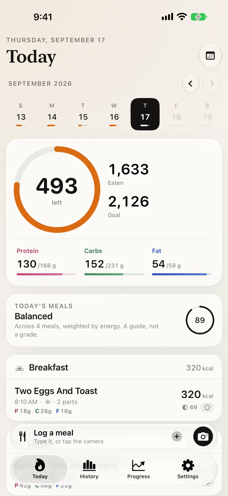
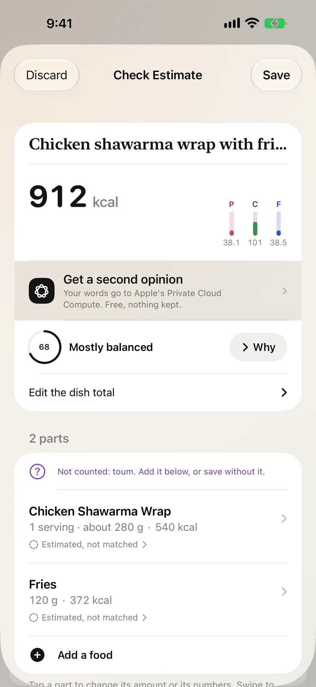
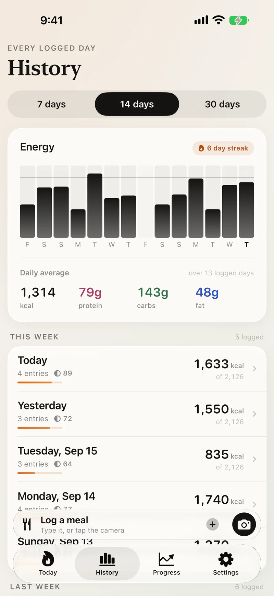
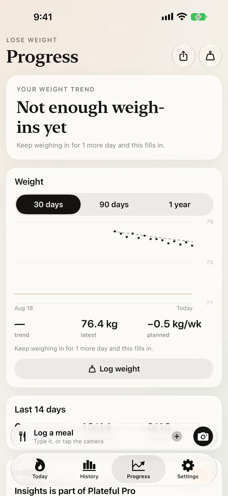
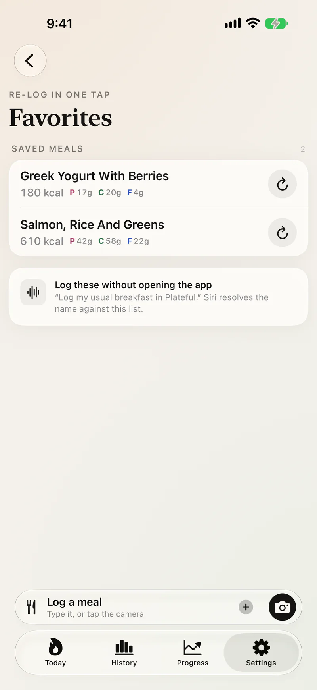

Say it. It’s logged.
Plateful is a calorie and macro tracker for iPhone. Tell Siri what you ate, take a photo, scan a barcode or type a sentence, and check the estimate before it’s saved.
Free to download · iPhone · iOS 18 or later

Four ways to log a meal
Siri
Say “Log a meal in Plateful” and tell Siri what you had. A meal you’ve logged before, or a favorite, takes one sentence: “Log my usual breakfast in Plateful.”
A photo
Take a photo of the plate. Plateful lists what it sees and how much of each, and you check it before it’s saved. On iOS 27 with Apple Intelligence, the photo stays on your iPhone.
A barcode or label
Scan a packaged food’s barcode. If the product isn’t known yet, photograph its nutrition label instead.
A sentence
Type what you ate the way you’d say it, like “a chicken shawarma wrap with fries.”
Shown before it’s saved.
Each estimate lists every part of the meal and its portion, and says which numbers it’s unsure of. You can change any of it before saving, by tapping or by saying what’s wrong.
- Looked up
- The numbers came from the food table.
- Estimated
- Nothing in the table matched closely enough, so check this part.
- Not counted
- Something it heard but couldn’t size. Add it, or save without it.
Two eggs and toast
320 kcal
2 parts
-
Scrambled eggs
Looked up -
Whole-wheat toast
Looked up
Chicken shawarma wrap with fries
912 kcal
2 parts
- Not counted: toum. Add it below, or save without it.
-
Chicken shawarma wrap
Estimated, not matched -
Fries
Estimated, not matched
Greek yogurt with honey and walnuts
262 kcal
3 parts
-
Greek yogurt, plain
Looked up -
Honey
Looked up -
Walnuts
Looked up
Example meals. In the app, the numbers are your own.
Where the numbers come from
The language model only works out what’s on the plate and how much of each part. The calories and nutrients come from a food table, not from the model’s memory.
The app has 14,000+ foods built in, from USDA FoodData Central and Health Canada’s Canadian Nutrient File. Barcodes are looked up among more than 400,000 packaged foods from USDA’s branded foods list and Open Food Facts.
| Part | Portion | Energy |
|---|---|---|
| Scrambled eggs | 2 large · 122 g | 182 kcal |
| Whole-wheat toast | 1 thick slice · 55 g | 138 kcal |
| Total | 320 kcal | |
The Today screen
The ring shows what’s left of your daily target, the bars show protein, carbs and fat, and each meal gets a score from what it’s made of.
Your targets come from your body, your goal and the pace you pick during setup. With Apple Health connected, a workout adds back what it burned.
493left
- Eaten
- 1,633
- Goal
- 2,126
Protein
130/168 g
Carbs
152/231 g
Fat
54/59 g
Today’s meals
Balanced
Across 4 meals, weighted by energy.
Also in the app
- Apple Health
- Meals are written to Health. Weight, workouts and active energy are read back, so the ring counts what you burned.
- Widgets
- Today’s ring on the Home Screen, a button that opens the camera, and your favorites.
- Favorites
- Save a meal you eat often and log it again with a tap, or by name to Siri.
- Meal reminders
- Sent around the times you usually eat, which the app learns from your week.
- History
- Every logged day with your averages over 7, 14 or 30 days.
- Progress
- Your weight trend against the plan you set when you started.
- Sync
- Sign in with Apple to back up your log and use it on your other devices.
Screens




Privacy
Plateful is built to keep your information on your iPhone. When something has to leave it, the app tells you first, and you can turn it off.
- On your iPhone first
- When your iPhone can estimate a meal itself, the meal doesn’t leave it.
- No account needed
- Your log stays on the phone. Signing in backs it up to your own account.
- Health data stays on the phone
- Your body profile, weigh-ins and anything read from Apple Health are never sent anywhere.
- Cloud estimation is optional
- A meal’s words or photo go to a cloud model only while it’s turned on. Plateful’s server passes them on and doesn’t store them.
- No ads or tracking
- There’s no advertising or third-party analytics in the app, and nothing is sold. This website doesn’t load anything from other sites either.
- Deleting your account
- Settings › Account › Delete Account removes your account and everything synced to it.
Which iPhones it works on
Any iPhone with iOS 18 or later. Where Apple Intelligence is available, more of the estimating happens on the phone itself.
iOS 27 with Apple Intelligence
- Typed and spoken meals estimated on your iPhone
- Photos estimated on your iPhone
- Second opinions from Apple’s Private Cloud Compute
iOS 26 with Apple Intelligence
- Typed and spoken meals estimated on your iPhone
- Photos estimated in the cloud, if you turn it on
iOS 18 and later
- The built-in food table, barcodes and nutrition labels
- Widgets, Apple Health, sync, reminders and Progress
- Meals estimated in the cloud, if you turn it on
Free, with an optional subscription
Everything you need to track what you eat is free. Plateful Pro adds more for people who want it.
Free
- Logging by voice, photo, barcode, label or text
- Estimation on your iPhone
- The built-in food table
- Widgets, Siri and favorites
- Apple Health, sync and meal reminders
- History, Progress and the meal score
- A monthly allowance of cloud estimates
Plateful Pro
Everything in Free, plus:
- A larger monthly allowance of cloud estimates
- The option to have Claude estimate every meal
- Insights: why a meal scored what it did, a swap that would raise it, and patterns over four weeks
- Adaptive targets from your weight trend, applied only when you accept them
- A printable PDF progress report
- New features as they’re released
Monthly or yearly, billed by Apple. The price is shown in the app before you subscribe. Cancel any time under Subscriptions in your iPhone’s Settings; nothing you logged is hidden if it ends.
Questions
For anything not answered here, email asad.n.ansari.03@gmail.com or see Support.
Is Plateful free?
Yes. Logging, the food table, barcodes, nutrition labels, estimation on your iPhone, widgets, Apple Health, sync, Progress and meal reminders are free and stay free. There are no ads.
Plateful Pro is an optional subscription for people who want more: a larger cloud allowance, Claude for every meal, Insights, adaptive targets and the PDF report. The current price is shown in the app before you subscribe.
Which iPhones does it work on?
Any iPhone with iOS 18 or later. With Apple Intelligence on iOS 26, typed and spoken meals are estimated on the iPhone itself; on iOS 27, photos are too. On any other iPhone the food table, barcodes, labels and everything else work the same, and meals can be estimated in the cloud when you turn that on.
Plateful is made for iPhone only. There is no iPad, Mac, Android or web version.
How does Plateful estimate a meal?
A language model reads what you said, typed or photographed and works out what is on the plate and how much of each part. The calories and nutrients then come from a food table (USDA FoodData Central, Health Canada’s Canadian Nutrient File and Open Food Facts), not from the model’s memory. Parts it matched in the table are marked “Looked up”; the rest are marked as estimates.
How accurate are the estimates?
Portions and recipes vary, and a model can misjudge a plate, so no estimate is exact. That is why every estimate is shown before it is saved, with each part, its portion and anything the model was unsure of. You can change any of it by tapping, or by saying what to fix.
Plateful is not medical advice, and its estimates can be wrong about what a meal contains, including allergens. Never rely on it to decide whether a food is safe for you.
Do I need an account?
No. Without one, your log stays on your iPhone. Signing in with Apple backs your log up and syncs it to your other devices, and is needed for cloud estimation.
Where does my data go?
Your food log leaves your iPhone only if you sign in, and then only to your own account. Health data never leaves it. A meal’s words or photo go to a cloud model only while cloud estimation is on, and Plateful’s server does not store them. There is no advertising and no third-party analytics or tracking.
The Privacy Policy lists every flow, what is kept and for how long: https://anacs-26.github.io/plateful-site/privacy/
Does it work with Apple Health?
Yes, if you connect it. Plateful writes your meals to Health and reads your weight, workouts and active energy, so your weight trend and the energy you burned show up in the app. What it reads from Health stays on your iPhone.
Can I log without opening the app?
Yes. Say “Log a meal in Plateful” and tell Siri what you had. A meal you have logged before, or a favorite, takes one sentence: “Log my usual breakfast in Plateful.” The Home Screen widgets log a favorite or open the camera in one tap.
Does it work offline?
Mostly. The food table is built into the app, and on an iPhone with Apple Intelligence, estimation happens on the phone. A barcode that is not in the built-in table, cloud estimation and sync need a connection.
How do I cancel Plateful Pro?
Pro is billed by Apple. Open the Settings app, tap your name, then Subscriptions. You keep Pro until the end of the period you paid for, and nothing you logged is ever removed or hidden when it ends. Refunds are handled by Apple at https://reportaproblem.apple.com.
How do I delete my account and data?
In the app, open Settings, Account and tap Delete Account. That removes your account and everything synced to it. Deleting the app removes what it stored on your iPhone.
An estimate was wrong. How do I tell you?
Open the meal, tap the ⋯ button and choose Report an Issue. The report carries the numbers the estimate produced, so it can be traced and fixed. For anything else, email asad.n.ansari.03@gmail.com.
Terms and privacy
Plateful estimates meals on your iPhone when it can. Your food log leaves it only if you sign in, and then only to your own account. Health data never leaves it. A meal's words or photo go to the cloud only while cloud estimation is on, and you can turn it off at any time in Settings.
Plateful: Calorie Tracker
Free to download · iPhone · iOS 18 or later